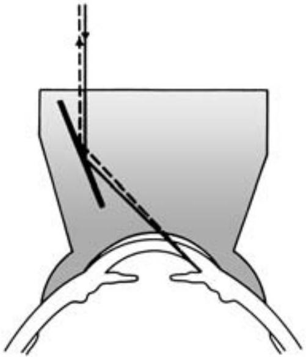
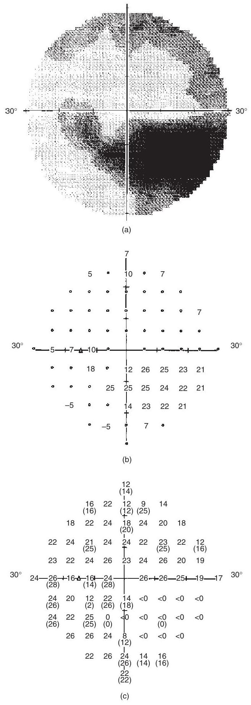
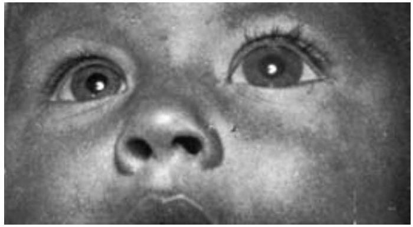

There are numerous types of glaucoma and each has the potential to cause blindness. In the UK
it accounts for 15% of blind registrations. A general characteristic of glaucoma is a rise
in the intra-ocular pressure (IOP) that is sufficient to cause damage to the optic nerve
head. IOP is determined by the balance between the rate of production and the rate of
drainage of aqueous fluid. Normal intra-ocular pressure is $15-20 \text{ mmHg}$, but this
measurement depends to some extent on which method is used to measure it. In addition, the
thickness of the cornea can influence IOP readings. Thin corneas give rise to artificially
low readings and thicker corneas may give rise to artificially high readings. For this
reason, corneal pachymetry is performed.
Methods of measuring intra-ocular pressure
Digital
The patient looks downwards, closing the eye to be examined, and the nurse gently palpates
the eyeball with the two index fingers to assess the degree of 'hardness'. This is not an
accurate measurement but an eye with raised pressure will feel harder than one with normal
pressure. It is a useful initial method of assessment, especially if none of the specialised
equipment needed for measuring intra-ocular pressure is available, as in the GP's surgery.
Goldmann applanation tonometer
The tonometer head comprises a double prism. It is attached to a slit lamp. This is a contact
method of determining the IOP, and the eye must be anaesthetised first with anaesthetic
drops such as Proxymetacaine Hydrochloride $0.5\%$. Fluorescein sodium drops are also
instilled to stain the tear film and allow the semicircles in the tonometer head (prism) to
be viewed. The dial should be pre-set between 1 and 2. The cobalt blue light is used and the
prism is placed against the cornea and the pressure measurement is read off a dial on the
tonometer. The reading on the dial has to be multiplied by ten.
The tonometer should be calibrated on a daily basis to ensure accuracy.
Because of concerns about cross infection, disposable prism heads or prism sheaths should be
used. Where non-disposable prisms are used, they must be properly disinfected between use.
Perkins' applanation tonometer
The Perkins' applanation tonometer is a hand-held tonometer, working on the principles of the
Goldmann tonometer mentioned above. It is useful for patients who are unable to sit at a
slit lamp, e.g. those who are in wheelchairs, who are bed-bound or unconscious. The method
of use and normal pressure is the same as for the Goldmann tonometer.
Tonopen
Tonopens are small pen-like instruments that measure pressure in a similar fashion to the
applanation method. This method is becoming increasingly popular as the operator does not
have to have skill in the use of the slit lamp.
Non-contact tonometer
Non-contract tonometers, employed by optometrists, use a puff of air blown against the eye.
The time required to flatten the cornea is converted into a figure to denote the
intra-ocular pressure.
Schiotz tonometry
A contact method of measuring IOP that does not require a power source. This is rarely used
in developed countries.
The anterior chamber
The anterior chamber is the area between the posterior surface of the cornea and the anterior
surface of the iris. The angle of the anterior chamber may be examined using a gonioscope
(see p. 134).
The posterior chamber
The posterior chamber is the area between the posterior surface of the iris and the anterior
surface of the lens and suspensory ligaments. Both these chambers are filled with aqueous
fluid.
Aqueous fluid
Aqueous is a clear fluid produced by the ciliary processes of the ciliary body (see p. 121).
It flows from the ciliary body into the posterior chamber, through the pupil, into the
anterior chamber, and drains through the anterior chamber angle at the rate of approximately
$2 \mu\text{l}/\text{minute}$.
Composition of aqueous
Aqueous is similar in constitution to plasma: $99\%$ water and $1\%$ nutrients, e.g. sodium,
potassium, chloride, bicarbonate, glucose. Volume is approximately $125 \mu\text{l}$.
Functions of aqueous
to maintain intra-ocular pressure
to provide a clear medium for refraction
to provide nourishment to the lens; and to the posterior surface of the cornea.
The angle of the anterior chamber
The angle of the anterior chamber lies between the limbus (corneal-scleral junction) and the
iris and it surrounds the circumference of the anterior chamber. It is composed of the
trabecular meshwork and the canal of Schlemm (see Fig. 9.1). The trabecular meshwork is made
up of fibrous connective tissue, perforated with oval holes (sieve like) and lined with
endothelium, which is continuous with that of the posterior surface of the cornea. There are
three distinct parts: the uveal meshwork, which is innermost extending from the iris root to
Schwalbe's line; the middle section is the corneo-scleral meshwork - this is the largest
section; the endothelial meshwork communicates directly with Schlemm's canal.
Aqueous drains via two routes: $90\%$ through the meshwork from the anterior chamber into the
canal of Schlemm. This is an oval-shaped channel lined with endothelium. Between 25 and 30
collector channels leave the canal of Schlemm and anastomose to form the intra-scleral
plexus. From here the aqueous drains into the aqueous veins, the vortex veins and the
inferior ophthalmic vein. The uveoscleral route accounts for the remaining $10\%$ of aqueous
drainage. Aqueous flows across the ciliary body to the suprachoroidal space, from here it
enters the venous circulation.
Function of the angle
The angle is for the drainage of aqueous fluid from the eye into the venous circulation.
Blood supply
The blood supply to and drainage from the angle of the anterior chamber is via:
anterior ciliary arteries
aqueous veins.
Related disorders - glaucoma
Glaucoma is a group of conditions that can cause permanent sight loss. There is damage to the
optic nerve head that may or may not be the result of a rise in the intra-ocular pressure.
It is the damage to the optic nerve head that results in visual field loss (see Colour Plate
10).
The four types of glaucoma, each with a different aetiology, are:
Primary acute glaucoma (PAG) affects one in 1000 over the age of 40. The incidence increases
with age and affects women four times more frequently than men. The condition can be divided
into two types:
primary pupil block
primary irido-trabecular block.
Pupil block
Some $94\%$ of PAG cases are of the pupil block type. The eye that is predisposed to this
type has:
a dome iris
an iris that is characteristically bowed forward
hypermetropia
a shallow anterior chamber
a narrow drainage angle
a large anteriorly placed lens.
The pupil becomes blocked by the lens when the pupil is semi-dilated. The aqueous cannot flow
through the pupil, resulting in a rise in pressure behind the iris. This causes the iris to
be pushed forward (iris bombe) and the forward-placed iris blocks the drainage angle.
Treatment for this involves the use of miotic drops such as Pilocarpine $2\%$, which brings
the iris away from the angle and laser iridotomy which will allow the aqueous to pass into
the anterior chamber, bypassing the blocked pupil. Beta-blockers such as Timoptol are used
to reduce aqueous secretion in the affected eye and as a prophylactic measure in the other
eye.
Irido-trabecular block
Irido-trabecular block only occurs in 6% of PAG cases. In irido-trabecular block the eye
typically has:
a plateau iris
emmetropia
a deep anterior chamber
deeply recessed angles.
Pupillary dilation leads to a progressive irido-trabecular blockage. Treatment is by the use
of miotic drops to bring the iris away from the angle.
PAG usually presents unilaterally, but the fellow eye can also be affected, so it must
receive prophylactic treatment.
PAG can be divided into five stages which may overlap but the overlap may not be orderly from
one stage to the next:
latent - asymptomatic
intermittent or sub-acute
acute
chronic
absolute - end stage.
Latent
As the patients are asymptomatic the condition is diagnosed either at a routine eye
examination or when another eye condition is being investigated. These patients must be
warned of the prodromal symptoms (see below) in case they progress to the next stage.
Intermittent or sub-acute
A rapid closure of parts of the angle (see Gonioscopy below) causes the pressure to rise.
This results in certain prodromal symptoms and signs:
headache
eye pain
blurred vision and haloes seen around lights due to corneal oedema
nausea
general malaise.
These prodromal symptoms and signs usually occur at night and improve by the morning when the
miosed pupil during sleep has come away from the angle. Patients often think they have a
migraine or 'sick headache'. An attack may develop into an acute attack or bypass this
stage. As more of the angle becomes blocked with subsequent attacks, chronic closed-angle
glaucoma develops. It is therefore important to diagnose and treat this stage early.
Treatment is by laser iridotomy followed by intensive miotic drops.
Investigations
Provocative tests: Provocative tests are performed on patients with prodromal or
latent symptoms to see if the intra-ocular pressure rises when the eye has been subjected to
certain situations. Although rare, they are still in use in some centres.
Non-provocative tests - Gonioscopy: the depth of the patient's anterior chamber angle
can be assessed by the use of a gonioscope. This is a large contact lens with either two or
three mirrors placed at differing angles to each other (Fig. 10.1). This enables the angle
of the anterior chamber to be viewed when used with the slit lamp. The patient's eye is
anaesthetised with anaesthetic drops such as Proxymetacaine hydrochloride $0.5\%$. A
lubricant such as Methylcellulose is applied to the surface of the lens that is placed
against the cornea. This lubricates the lens and fills the space between the lens and the
cornea. The degree to which the angle is open is graded using a grading system such as
Shaffer. This system records the degree to which the angle is open on a scale from 0 to $4$;
0 being closed and 4 being fully open. Grades 1 and 2 demonstrate that angle closure is
probable/possible. The circumference of the angle usually has variable degrees of closure.
Acute glaucoma
This is an ophthalmic emergency as the acute raise in intra-ocular pressure can damage the
optic nerve irreversibly.
Signs
A sudden rise in intra-ocular pressure due either to pupil block or angle closure causes
congestion and oedema of the structures involved.
Lids may be red and swollen.
Conjunctiva may show dusky red injection and may be chemosed.
Hazy cornea.

Fig. 10.1 Optical systems of Goldmann contact lens used in gonioscopy.
Iris may appear 'muddy' and swollen with loss of its usual clear pattern.
Pupil may be fixed, semi-dilated and oval in shape.
Shallow anterior chamber.
Raised intra-ocular pressure (can be as high as 70 mmHg or more).
Rapidly reduced visual acuity.
Patient's needs
Relief of symptoms: severe headache; pain in the eye; nausea; vomiting; abdominal pain;
generally feeling unwell. These symptoms can sometimes be confused with other conditions
such as acute abdomen and, with the dilated pupil, neurological conditions.
Reassurance and explanation.
Possible admission to hospital.
Preparation for laser treatment.
Instructions on discharge from hospital.
Nursing priorities
Inform medical staff at once. Immediate treatment will bring relief of symptoms and
prevent complications occurring.
Prepare medication and commence instillation of drops as soon as possible after they
have been prescribed.
Immediate nursing action
Test visual acuity, if patient is fit enough.
Explain that treatment to the eye will relieve general symptoms.
Lay the patient on a couch in a quiet, darkened area.
Provide the patient with a vomit bowl and tissues.
He may appreciate a cold compress on the forehead.
Prepare Acetazolamide 500 mg to be given intravenously by the doctor to reduce the
production of aqueous.
Commence the instillation of G. Pilocarpine $4\%$ four times per day to the affected eye
once it has been prescribed. Intensive miotics are not effective in pulling away the
iris from the angle as the sphincter muscle is usually ischaemic if the pressure is
above 30 mmHg (Kanski, 2003).
Commence G. Pilocarpine one to two times a day to unaffected eye.
Commence a beta-blocker (e.g. Betagan - Levobunolol hydrochloride) to the affected eye.
Commence steroid drops, e.g. Prednisolone acetate (Pred-forte) drops, to the affected
eye as there is usually an associated inflammation.
Give analgesics and/or anti-emetics if headache and nausea and vomiting continue despite
treatment.
Offer mouthwash if vomiting to freshen the mouth and breath (DoH, 2003).
Prepare further treatment if necessary to reduce the intra-ocular pressure if initial
treatment has failed to bring it down:
intravenous Mannitol $20\%$ - 200 ml given over one to two hours
care for intravenous rate of flow and the site of the cannula, as
leakage into the surrounding tissues causes phlebitis
assist the patient to the toilet or give a urinal or bedpan as Mannitol
has a diuretic effect.
Glycerol ( $1-5 \text{ mg}/\text{kg}$ body weight) orally, in orange juice to
disguise the taste. This in itself may induce nausea and vomiting.
The patient may resent the frequent attention he requires in the initial stages of treatment
of this condition and may just want to be left alone. Handle the patient sympathetically and
show understanding of his feelings.
Further nursing action
Prepare the patient for laser iridotomy to both eyes (prophylactically to the fellow eye).
Such preparation is restricted to explanation of the procedure and ensuring that the patient
has their pain assessed and appropriate analgesia provided before they attend for the laser
treatment. If the patient is still nauseous, anti-emetics should also be given as
prescribed.
Chronic
Often referred to as 'creeping angle closure', this is when repeated attacks of either
intermittent or untreated acute episodes cause further adhesions of the peripheral iris to
the posterior surface of the cornea (peripheral anterior synaechiae), thus closing the
angle. The signs and symptoms are similar to chronic open-angle glaucoma (see below).
Absolute
This is the end stage of primary acute, chronic and secondary (see below and p. 144) glaucoma
when treatment has failed. Cataracts are usually present and occur due to the medical or
surgical treatment rather than to the disease process (Kuppens et al., 1995).
Blind, painful eyes which occur at this stage are best treated by enucleation (see Chapter
15). Alternatively, periodic retrobulbar or facial nerve injections can be administered.
Phthisis bulbi, or shrinkage of the eye, occurs as it atrophies when enucleation is the most
appropriate course of action.
Chronic open-angle glaucoma
Chronic open-angle glaucoma occurs in patients of either sex over the age of 45 years with
symptoms usually occurring after the age of 65 if the disease is undetected. This is not to
be confused with the chronic form of primary acute glaucoma. It has an insidious onset and
is slowly progressive. The patient does not usually notice symptoms until the disease has
progressed so far as to result in marked visual field loss. This is because it is the nasal
visual field that is lost initially, the fellow eye compensates for the vision loss. It is a
bilateral condition, with one eye often being involved earlier and more severely than the
other. The patient usually first notices that he cannot see so well in his peripheral vision
and has started knocking into things. He often thinks it is just old age or something a new
pair of glasses will correct. Hence it is optometrists who often refer these patients to
ophthalmologists.
Certain optometrists have received additional training in the diagnosis of chronic open-angle
glaucoma. They have glaucoma suspects referred to them by fellow optometrists. The
optometrist undertakes a thorough examination of the patient and only refers on to an
ophthalmologist those people with glaucoma. This allows the patient reassured they do not
have the disease and allows them to be discharged. It is thought that without such schemes
as many as $20\%$ of referrals to hospitals are false positives.
Cause
The cause of chronic glaucoma is not really understood, but there are several risk factors
(Kanski, 2003):
raised intra-ocular pressure
family history
history of migraine or vasospasm
high myopia
central retinal vein occlusion
retinal detachment caused by a retinal hole
Fuch's dystrophy
increasing age
diabetes mellitus
raised systolic blood pressure.
There is also a higher incidence in the Afro-Caribbean population (Laske et al., 1994). The
aqueous cannot drain away and the intra-ocular pressure rises. The optic nerve head is
composed of millions of nerve fibres as they exit the eye. Where the central retinal artery
and vein enter and exit through the middle of these fibres, this is referred to as the optic
cup. In open-angle glaucoma the cup becomes larger as the nerve fibres atrophy, due to the
pressure on them, producing loss of peripheral vision. Typically there is a loss in the
nasal peripheral field at first, with progressive loss of the rest of the peripheral field
(Fig. 10.2). Central vision is usually retained longer but will also be lost if treatment is
not given or is unsuccessful. Sometimes patients experience loss of central vision before
peripheral vision has been affected.
Chronic glaucoma affects $2\%$ of the population and is familial in $10\%$ of cases (Kanski,
2003). Anyone with immediate relatives with this disease should receive an ophthalmic
check-up, which is free in the UK, every three to five years after the age of 40. Treatment
can then be commenced as soon as signs occur, before symptoms are noted, so that sight can
be saved.

Fig. 10.2 Automated perimeter showing field loss which is shown as (a) a dark
grey scale or (b) as high figures or (c) as low figures.
Investigations
Perimetry, posterior segment examination and applanation tonometry are carried out to
diagnose and monitor the disease. Corneal pachymetry is also performed to determine the
thickness of the cornea.
Perimetry
These tests are performed to assess the degree of peripheral and central visual loss (see p.
54). They are used to detect the disease and follow its progress. There are several
different types of test but they all use the same principle. The patient, with one eye
covered, stares at a white spot or light. Without moving his eye from this spot or light he
indicates verbally or by pressing a buzzer as soon as he sees another spot or light entering
his peripheral vision from any angle in the $360^{\circ}$ circle. Most machines these days
are computerised.
Posterior segment examination
Examination of the optic disc can be made using a slit lamp and hand held magnifying lenses
such as 60 D ; 78 D ; 90 D , to assess the degree of cupping, state of the neuro-retinal rim
and any changes to the retinal vasculature, e.g. bayoneting or flame haemorrhages.
Laser scanning tomography
This is a more sophisticated investigation of the optic disc which quantifies the areas of
neural tissue at the optic disc by taking sections through the nerve head in a similar
manner to a CT scan.
Tonometry
Measurement of the intra-ocular pressure is recorded (see p. 51). The pressure is not always
markedly raised, especially early in the disease.
Gonioscopy
Gonioscopy will be carried out to assess the degree to which the angle is open (see p. 134).
Patients may have narrow angles as well as chronic glaucoma.
Phasing
The patient normally attends as a day case to see if the intra-ocular pressure is raised at
various times of the day. There is a normal diurnal pattern to IOP, with the pressure being
higher in the mornings. The intra-ocular pressure is normally recorded every four to six
hours, ideally by the same operator and with the same equipment.
HRT (Heidelberg retinal topograph)
3-dimensional topographic measurements of the optic disc and retina.
OCT (optical coherence tomography)
OCT uses laser to bring back information about the layers of the retina and also optic disc
measurement. It is patient and user-friendly and dilation of the pupil is not essential.
Signs
Cupped optic disc. The disc becomes oval vertically, and pale with the blood vessels
being displaced nasally and the nerve fibre rim becoming narrower. A normal cup is 0.3 ;
a glaucomatous cup is $0.5-0.8$. (These values are expressed as ratios - the diameter of
the cup is expressed as a fraction of the diameter of the disc giving a cup/disc ratio.)
Loss of visual fields, typically peripheral field initially and central field later
(Fig. 10.2).
Raised intra-ocular pressure up to 25 mmHg .
Patient's needs
An understanding of the condition, treatment and prognosis.
Someone to listen and explain procedures.
Advice about work/recreation/lifestyle changes.
Guidance/help with mobility because of visual impairment.
Information in a format that he can read and understand.
Assistance with investigations, especially perimetry.
Instruction in instillation of drops and taking of oral medication and the impact they
have on the disease process.
Preparation for laser treatment or surgery.
Nursing action
Guide/help patient while he is at the hospital. His degree of visual impairment will depend
on the amount of glaucomatous damage. If he has peripheral field loss, he will tend to knock
into furniture, doors, etc, and will need to be escorted to the varying departments during
his visit. McBride (2000 and 2002) found that hospitals were not meeting the needs of people
with visual impairment. Patients need people to respect them as human beings and not just
another case. Nurses should be pro-active in ensuring that the environment is conducive to
the needs of people with visual impairment.
Assist the patient with or perform perimetry. These tests require concentration on the part
of the patient. As many patients are elderly this is not easy to maintain and therefore the
patient needs encouragement and assistance during these tests.
Provide the patient with information on his treatment and treatment options which will be
either:
Medical - it is not wise to employ more than two topical medications as changes
to the conjunctiva which may occur after three years' use may compromise the success of
a trabeculectomy (Broadway et al., 1994). Most frequently, the choice will be mono
therapy initially.
Laser - effective in short-term control (Migdal, 1995).
Surgical - surgery is now being performed earlier in the disease than in the past
(Migdal, 1994). When performed early in the disease the intraocular pressure is well
controlled (Migdal, 1995). It is important to emphasise that lost sight cannot be
restored and that the aim of treatment is to preserve what sight is remaining.
Medical treatment
The model for the management and treatment of people with open-angle glaucoma is increasingly
a shared responsibility. Nurses and optometrists have expanded their roles to include
managing caseloads of patients with stable glaucoma. Protocols and guidelines following risk
assessment support such roles.
As compliance can be a particular problem in this chronic condition (Patel & Speath, 1995)
there is a need to emphasise the importance of instilling the drops in order to control the
IOP, with a view to preventing further visual field loss. Following clinical examination and
interpretation of results, discussion with the patient should be about explaining findings,
ensuring they have an understanding of what has been said. Answer any queries the patient
may have. A target IOP will be set, usually $30\%$ reduction from the baseline measurement
(EGS, 2003). When setting the target pressure factors relating to the patient's quality of
life should be taken into account such as their level of anxiety relative to the chronic
nature of the condition, current level of vision loss, cost, inconvenience and side effects
of treatment.
Instruct the patient about his drops and any other medication; they need to be aware of the
effects and side effects. The following medications may be instigated:
Prostaglandin analogues, e.g. Latanaprost $0.005\%$ or Travoprost $0.004\%$ nocte.
Beta-blocker, e.g. Timolol maleate (Timoptol) twice a day or Betaxolol $0.25\%$ twice a
day.
Miotics, e.g. Pilocarpine $1\%-4\%$ four times a day.
Acetazolamide tablets 250-500 mg four times a day or slow-release twice a day.
With drop instillation, there is a need to prevent systemic absorption. This can be achieved
by asking the patient to close their eye gently after instilling the drop and count slowly
to 60 before they open it again.
Combined topical preparations, e.g. Cosopt (dorzolomide $2\%$ and timolol $0.5\%$ ) or
Xalacom (latanoprost $0.005\%$ and timolol $0.5\%$ ).
Where topical medication proves to be ineffective, consideration should be given to changing
the medication before adding additional medication. Medication may be added where there is
some response to treatment but the target IOP has not been achieved. (MREH, 2004).
Laser treatment
Prepare the patient for laser (see p. 48) trabeculoplasty. This procedure involves bombarding
the trabecular meshwork with the laser. It is thought that scarring of the tissue stretches
the meshwork and opens it up.
Surgical treatment
Admit patient to the day unit or ward.
Prepare patient for operation, which is usually performed under a local anaesthetic
unless there are indications for general anaesthetic.
Trabeculectomy is the commonest type of drainage operation performed. This operation involves
making a scleral flap and removing a strip of trabecular meshwork below this flap. The
scleral flap is sutured back into place, but as this does not heal properly, it causes a
fistula through which the aqueous can drain into the scleral vessels. The bulge over the
scleral flap, lying under the conjunctiva, is called a 'bleb'.
Give post-operative care:
Eye dressing:
Remove and discard the cartella shield.
A bleb should be noted under the conjunctiva.
The anterior chamber will be shallow but should not be flat. If it is
flat, the bleb is probably draining too much aqueous. A firm pad and
bandage should be applied to seal the bleb. The medical staff should be
notified.
Instillation of drops:
antibiotic
steroid
mydriatic.
Discharge of patient. If he is receiving antagonistic drops to each eye he must
be warned of the danger of a mix-up. The operated eye may be receiving a
mydriatic and the unoperated eye a miotic as treatment for chronic glaucoma. He
may need to be reminded to continue to take the medication to the unoperated
eye.
Complications of trabeculectomy
Early
over-drainage
under-drainage
hyphaema
aqueous misdirection into posterior segment of eye.
Late
Subconjunctival fibrosis: patients who have had long-term medical treatment prior
to their surgery are more prone to fibrosis (Broadway, 1994). Cytotoxic agents, such as
5-fluorouracil or mitomycin, given at the time of surgery or a few days
post-operatively, can prevent this occurring (Kanski, 2003). Care must be taken when
handling cytotoxic agents. Wear protective gloves, goggles, facemask and apron when
drawing it up. Ensure correct disposal of used syringes, needles and other equipment
used in an appropriately labelled container.
Cataract formation due to surgical intervention.
Infection as the bleb/fistula is only covered by conjunctiva.
Ocular hypertension
Intra-ocular pressure is higher than normal, over 21 mmHg on more than one occasion, and yet
there is no damage to the optic disc and no visual field loss. The condition may never
progress to open-angle glaucoma.
Risk factors
age - increasing age
race - Afro-Caribbeans and mixed race
gender - affects women more than men
type II diabetes
systemic hypertension
family history of glaucoma
corticosteroid treatments.
Normal tension glaucoma
This is sometimes referred to as low-tension glaucoma.
Risk factors
Age, affecting the elderly and women more than men. It is seen more often in Japan than in
Europe or the USA.
Clinical presentation other than IOP is similar to open angle glaucoma and treatment is also
the same. Blood pressure is monitored and dips in systemic blood pressure, especially at
night, should be noted. Any anti-hypertensive medication should be avoided at night.
Secondary glaucoma
Secondary glaucoma can be due to any of the following causes:
Conditions of the lens:
Dislocation (see p. 159). The dislocated lens falls into the drainage angle or
into the posterior chamber blocking the pupil.
Cataract formation (see p. 149).
The enlarged lens pushes forwards, blocking the pupil or angle. This is
called intumescence of the lens.
Lens material oozes out through the lens capsule clogging the angle.
This is called phacolytic glaucoma.
Conditions of the uveal tract:
Uveitis (see p. 123).
Debris from the inflammation of the uveal tract may clog the drainage
angle.
Pupil block caused by posterior synaechiae.
Permanent peripheral anterior synaechiae may develop from repeated
attacks of uveitis.
Tumours (see p. 127). Melanomas in the uveal tract cause raised intraocular
pressure by volume replacement, encroachment on the angle or by blocking the
vortex veins.
Trauma:
Haemorrhage (hyphaema; see p. 215) into the anterior chamber. The blood in the
anterior chamber clots in the angle effectively obstructing aqueous outflow.
Angle recession.
Corneal or limbal laceration (see p. 213). The anterior chamber is flattened and
the angle closed by adherence of the anterior surface of the iris onto the
posterior surface of the cornea.
Post-operative causes:
Flat anterior chamber: following intra-ocular surgery, aqueous may escape
through the wound, causing a flat anterior chamber. If this persists, permanent
anterior and posterior synaechiae may develop.
Post-operative hyphaema: blood clotting in the angle blocks the drainage
channels.
Rubeosis iridis: in diabetes mellitus and following occlusion of the central
retinal vein, small blood vessels grow into the anterior surface of the iris
(neovascularisation) and into the angle of the anterior chamber where they may block the
drainage channels (thrombotic glaucoma). The new vessels may also cause a spontaneous
hyphaema.
Steroids: it is not clearly understood why long-term treatment with topical
steroids cause a rise in intra-ocular pressure. Care must be taken in the use of topical
steroids in patients with a family history of chronic glaucoma. Regular checks of
intra-ocular pressure in these patients and in long-term users of topical, and in some
cases, systemic, steroids must be undertaken.
Thyroid eye disease: infiltration of the orbital fat and extra-ocular muscles
pushes the globe forwards, causing pressure on the globe with a subsequent increase in
intra-ocular pressure.
Patient's needs
These are similar to those of primary acute glaucoma. A careful history must be taken because
of the similarity in presenting signs and symptoms to primary acute glaucoma, and the other
eye must be examined for depth of the anterior chamber.
Nursing action
The cause of the secondary glaucoma, once diagnosed, is treated first. Therefore the nursing
action will be that of the cause.
The intra-ocular pressure is reduced by medical treatment initially. Surgical intervention
may be required if medical treatment fails to keep the intraocular pressure within normal
limits. Nursing action will therefore be instruction of the patient on instillation of drops
and taking medication, and administration of pre- and post-operative care when surgery is
performed.
Buphthalmos/childhood glaucoma (ox-eye)
Buphthalmos is a rare congenital condition affecting one in 10000 births and resulting in
increased intra-ocular pressure caused by a defect or blockage of the drainage angle by an
embryonic membrane. Occasionally the canal of Schlemm is absent. Forty percent have raised
intra-ocular pressures in utero, $50\%$ manifest in the first year of life and $10\%$
manifest between the first and third year of life.
It is usually a bilateral condition, boys being more commonly affected than girls.
Signs
Large bulging eyes (Fig. 10.3). In childhood the sclera is more elastic than in the
adult eye and the ever-increasing intra-ocular pressure stretches the sclera. It becomes
thinned and appears bluish due to the pigment of the uveal tract showing through. The
cornea also stretches. The enlargement of these two structures gives the child's eye the
appearance of an ox-eye.
Deep anterior chamber. The lens is pushed backwards by the increased pressure, thus
forming a deep anterior chamber.

Fig. 10.3 Buphthalmos.
Large cornea. As the cornea is stretched, its diameter increases from a normal $9.0-11.5
\text{ mm}$ to $12-14 \text{ mm}$. Tears may appear in Descemet's membrane.
Deep cupping of the optic disc due to the raised intra-ocular pressure.
The intra-ocular pressure will be between 25 mmHg and 45 mmHg .
Patient's needs
Relief of symptoms:
lacrimation - child always appears to have running eyes and nose
photophobia - child often puts his arm over his eyes to shield them from the
light
general irritability.
Admission to hospital.
General care of a child in hospital.
Nursing action
Admit the child to the paediatric ward.
Give an explanation and reassurance to the parents or guardians. Involve them in as much
of the child's care as possible.
Prepare the patient for examination under anaesthetic. The following investigations are
carried out:
measurement of intra-ocular pressure
gonioscopy
ophthalmoscopy of optic disc
measurement of corneal diameter.
These investigations are performed initially to diagnose the disease and thereafter at
periodic intervals to assess success of treatment or progress of the disease.
Give post-anaesthetic care following examination under anaesthesia.
Administer pre-operative care if surgery is to be performed:
A goniotomy will be performed to open up the drainage channels by sweeping a
goniotomy knife around the whole of the anterior chamber angle.
A drainage operation, such as a trabeculectomy, will be performed where the
canal of Schlemm is absent or if the goniotomy fails to keep the intra-ocular
pressure within normal limits.
Give post-operative care:
monitor for pain and give prescribed analgesia
instillation of antibiotic and/or steroid drops - a mydriatic may be used
observation of the 'bleb' and depth of anterior chamber following trabeculectomy
(see p. 142).
If the glaucoma is unilateral, amblyopia must be prevented in that eye (see p. 188). Patching
of the unaffected eye will be instituted to encourage the child to use the glaucomatous eye.
Prognosis
The prognosis depends on when the disease became manifest (see above). The earlier the
disease is present, the worse the prognosis, and visual impairment may be severe.
Complications
Corneal/scleral perforation due to the thinning of those structures. Perforation may
occur with the least trauma.
Exposure keratitis due to the lids being unable to lubricate the enlarged cornea
adequately.
A bandage contact lens can be used to prevent and treat both these conditions.
Juvenile glaucoma
Juvenile glaucoma is associated with neurofibromatosis, Sturge-Weber syndrome, rubella and
aniridia. It presents later than buphthalmos and behaves like chronic open-angle glaucoma.
Hence care of the patient is similar.